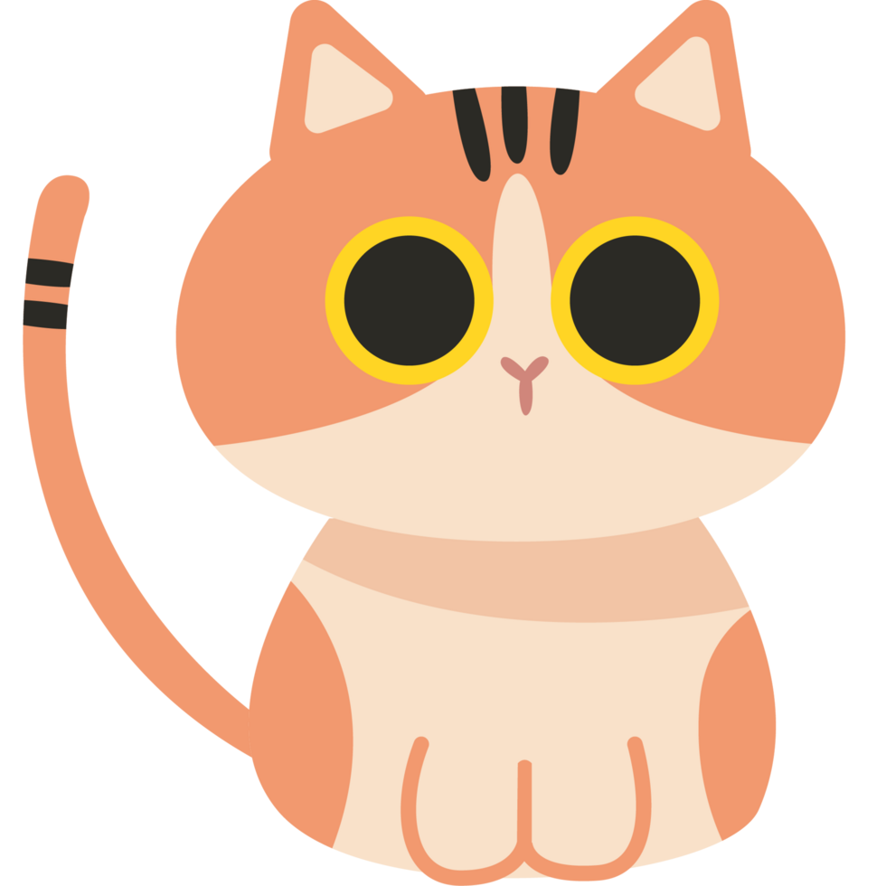
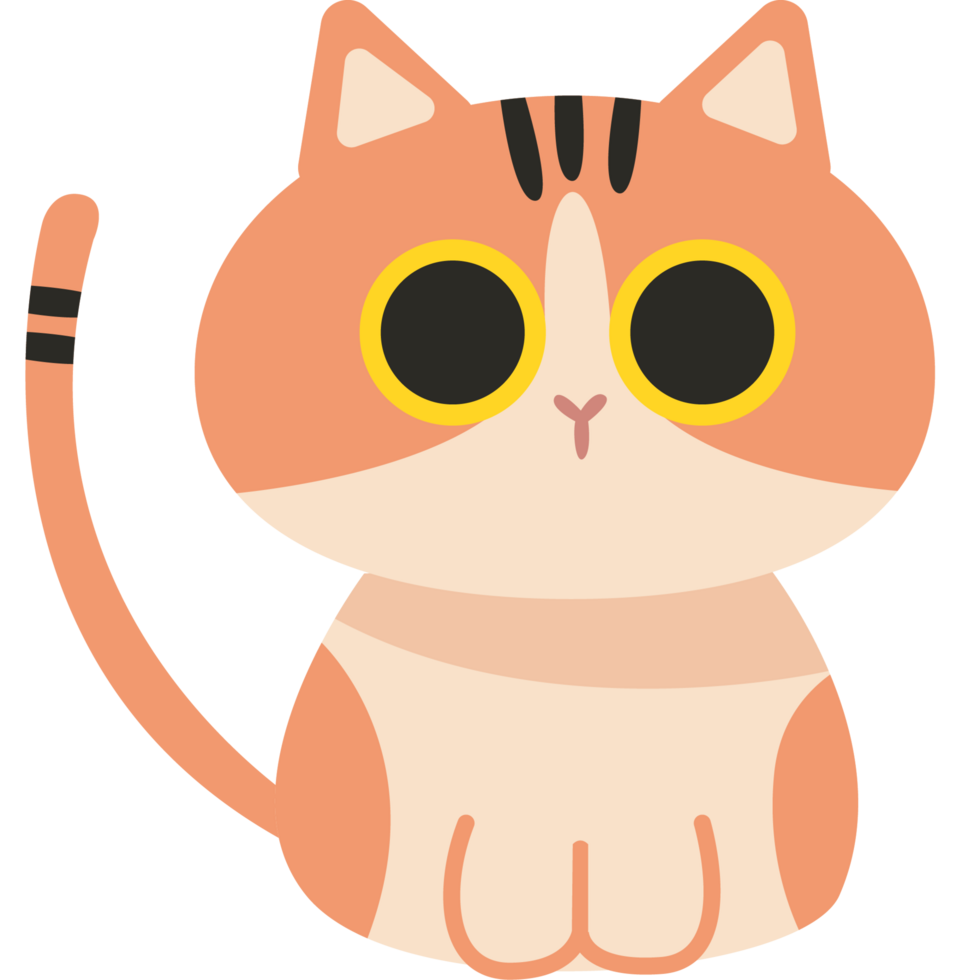

Guia Flexbox
Flexbox é um modelo de layout introduzido no CSS3 que torna mais simples a criação de estruturas de layout
complexas e responsivas. Ele permite que os elementos dentro de um contêiner se ajustem automaticamente conforme
o espaço disponível, facilitando o controle do alinhamento, espaçamento e dimensionamento dos itens. Isso
agiliza o desenvolvimento de layouts e os torna mais eficientes, garantindo que as interfaces funcionem de
maneira adequada em diferentes tamanhos de tela, desde desktops até dispositivos móveis.
Características do Flex Container
O flex container é o elemento pai que cria o contexto flexível para os seus elementos filhos. Ele define o eixo
principal e o eixo transversal, ao longo dos quais os itens são organizados e distribuídos. O contêiner flexível
controla como os elementos filhos se comportam em relação ao espaço disponível e define suas posições e
tamanhos. Propriedades como justify-content, align-items, flex-direction e align-content determinam o layout e a
organização dos itens dentro do contêiner, permitindo a criação de layouts dinâmicos e responsivos.
Display
O Flexbox é ativado em um contêiner ao aplicar a propriedade `display` com os valores “flex” ou “inline-flex”.
Quando o valor “flex” é utilizado, o contêiner se torna um bloco flexível (flex container), enquanto o valor
“inline-flex” cria um contêiner flexível em linha. Esse contêiner flexível define um contexto no qual todos os
elementos filhos diretos, chamados de “flex items”, são organizados de acordo com as regras do modelo Flexbox.
Justify-Content
Define o alinhamento dos itens ao longo do eixo principal. Isso permite distribuir espaço livre adicional
entre os itens de diferentes maneiras:
justify-content: flex-start
- Flex-start: Alinha os itens ao início do contêiner.
justify-content: flex-end
- Flex-end: Alinha os itens ao final do contêiner.
justify-content: center
- Center: Centraliza os itens no contêiner.
justify-content: space-between
- Space-between: Distribui o espaço uniformemente entre os itens, com o primeiro item no início e o
último no final.
justify-content: space-around
- Space-around: Distribui o espaço uniformemente ao redor dos itens.
justify-content: space-evenly
- Space-evenly: Distribui o espaço igualmente entre os itens e nas extremidades.
Align-items
Define o alinhamento dos itens ao longo do eixo vertical. Isso permite distribuir espaço livre adicional
entre os itens de diferentes maneiras:
align-items: flex-start
- Flex-start: Alinha os itens no início do contêiner verticalmente.
align-items: flex-end
- Flex-end: Alinha os itens no final do contêiner verticalmente.
align-items: center
- Center: Alinha os itens no centro do contêiner verticalmente
Flex-direction
Define a direção do eixo principal. A direção escolhida determina se os itens serão dispostos em linha (horizontalmente) ou em coluna (verticalmente). Isso afeta a ordem e o alinhamento dos itens dentro do contêiner.
flex-direction: row
- Row: Alinha os itens no centro do contêiner verticalmente
flex-direction: row-reverse
- Row-reverse: Os itens presentes dentro de um contêiner são dispostos em linha, na direção contrária que o texto.
flex-direction: column
- Column: Os itens presentes dentro de um contêiner são dispostos em coluna, com o início no topo e o final
na base.
flex-direction: column-reverse
- Column-reverse: Os itens presentes dentro de um contêiner são dispostos em coluna, com o final no topo e o início
na base.
Align-Content
A propriedade align-content é usada para alinhar linhas de itens dentro de um contêiner flexível. Mas ela só
funciona quando há várias linhas de itens. Isso acontece quando os itens "quebram" e vão para a linha de
baixo. A propriedade align-content ajuda a decidir como essas linhas devem ser organizadas dentro do
contêiner. Você pode empurrá-las para cima, para baixo, colocá-las no meio, espalhá-las.
align-content: flex-start
- Flex-start: Coloca todas as linhas no início do contêiner
align-content: flex-end
- Flex-end: Coloca todas as linhas no final do contêiner
align-content: center
- Center: Coloca todas as linhas no centro do contêiner
align-content: space-between
- Space-between: Distribui os itens igualmente, a primeira linha junto ao início do contêiner e a última linha junto ao final do contêiner.
align-content: space-around
- Space-around: itens distribuídos igualmente com o mesmo espaçamento entre cada linha.
Características do Flex Items
Os itens flexíveis são os elementos filhos diretos de um contêiner flexível. Embora eles herdem as
características do contêiner, podem ser ajustados individualmente usando propriedades como flex-grow,
flex-shrink e flex-basis. Essas propriedades determinam como cada item cresce, encolhe e ocupa espaço dentro do
contêiner. A flexibilidade dos itens permite um layout mais dinâmico e adaptável, assegurando que os elementos
sejam distribuídos de forma eficiente, independentemente do conteúdo ou do tamanho da tela.
Order
A propriedade `order` no Flexbox permite reorganizar a ordem visual dos itens flexíveis dentro de um contêiner, sem alterar a estrutura HTML. Ao atribuir valores positivos ou negativos, é possível mover os itens, com menores valores de `order` aparecendo antes dos maiores. Isso facilita a criação de layouts dinâmicos e responsivos.
Original:
Utilizando o order:
Align-self
A propriedade align-self em CSS é usada para ajustar o alinhamento de um item flexível dentro de um
contêiner flexível, permitindo que você sobreponha o alinhamento padrão definido pelo contêiner pai. Esta
propriedade aceita os mesmos valores que align-items e seus valores são usados para o item específico.
align-self: flex-start
- Flex-start: Alinha o item ao início do contêiner.
align-self: center
- Center: Alinha o item ao centro do contêiner. (gato cinza)
align-self: flex-end
- Flex-end: Alinha o item ao final do contêiner. (gato laranja)
flex-grow
A propriedade flex-grow determina a capacidade de um item flexível de se expandir para preencher o espaço
disponível dentro de um contêiner flexível. O valor atribuído a essa propriedade é um número sem
unidade, utilizado para calcular a proporção de crescimento. Esse valor define a quantidade de espaço
livre no contêiner que o item deve ocupar.
Se todos os itens tiverem flex-grow definido como 1, o espaço extra no contêiner será distribuído
igualmente entre eles. Caso um item tenha o valor 2 (gato branco), ele tentará ocupar o dobro do espaço
disponível em comparação aos itens com valor 1.


 
